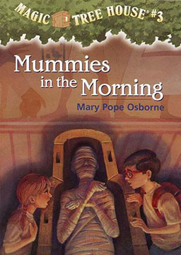
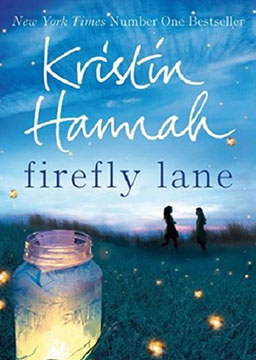

双语小说
收录中英文双语小说300多部，包括世界经典名著、社会小说、悬疑小说等短篇和长篇小说，可按照初中难度、高中难度和大学难度分类阅读，每部小说都有分段中英文对照，点击单词可查看中文翻译。

神奇动物在哪里 (Fantastic Beasts and Where to Find Them)
作者：J.K.罗琳 (Joanne Kathleen Rowling) [英国]
1926年纽约的魔法世界，危机四伏。某个神秘的力量在街头制造了一连串的破坏，并扬言要向反魔法师狂热组织第二塞勒姆揭露魔法社会的存在，并借他们的手斩草除根。而强大的黑魔法师盖勒特·格林德沃，在欧洲制造了浩劫后消声匿迹，没人能寻得其踪。魔法动物学家纽特·斯卡曼德抵达纽约时，对这日益严重的紧张气氛毫不知情。他即将结束对神奇魔法动物的研究和营救工作开展的环球之旅。在他看似其貌不扬的魔法皮箱里，其实保护着不少神奇魔法动物。但意外还是猝不及防地发生了，一个叫雅各布·科瓦尔斯基的麻鸡无意间放跑了几个纽特的神奇魔法动物，而此时的纽约魔法界正处于最为动荡不安的时刻，因严重违反保密法令被停职的前傲罗蒂娜·戈德斯坦恩一把抓住这个机会，想重回自己以前调查员的职位。但是，神秘莫测的美国魔法国会魔法安全部长帕西瓦尔·格雷夫斯却同时怀疑上纽特和蒂娜，事态突然变得凶险异常。自此，不得不合作的纽特和蒂娜，以及蒂娜的妹妹奎妮和他们的新麻瓜朋友雅各布，凑成了一支冒险小队，他们必须尽快找到走丢的神奇动物，以免它们遭受不测。然而，真正的危险，远比这四个上了通缉名单的局外人兼逃犯想象的要严重得多。他们与黑暗势力产生了正面冲突，魔法和麻鸡两界的战争可能因此一触即发。
魔戒3: 王者归来 (The Return of the King)
作者：约翰·罗纳德·瑞尔·托尔金 (John Ronald Reuel Tolkien) [英国]
随着最后的战斗的加入以及黑暗军团的集合 ，甘道夫迫切的想把冈多的残兵旧部重整旗鼓。甘道夫得到了罗翰国王塞奥顿的帮助，人类的力量伴随着勇气和那种充满热情的忠诚，他们面临着有史以来最大的考验。但是伊奥温和梅尔特藏在暗处，无法与冈多的敌人相抗衡。面对这种种损失和不利，他们继续冲锋在战斗的最前列，他们靠着一种忠诚和目标使得黑暗魔君索伦变的忐忑不安，心烦意乱。并且给了魔戒的守护者一个机会去完成他的请求。他们剩下的期望就是和弗拉多一起跨越狡猾的敌人的地界去把魔戒扔到末日山脉的火焰中。离最后的目的地越近，弗拉多的负担就越重，他必须依靠山姆·甘姆齐和古鲁姆。魔戒会在这过程中来测试弗拉多的忠诚，本性以及他的人性本身。
魔戒2: 双塔奇兵 (The Two Towers)
作者：约翰·罗纳德·瑞尔·托尔金 (John Ronald Reuel Tolkien) [英国]
博罗米尔被半兽人杀死之后，两个霍比特族人皮聘和梅利也被半兽人绑架，阿拉贡、莱格拉斯、金雳一路追踪半兽人，营救皮聘和梅利，遇到了“复活”的灰袍巫师甘道夫。此时，投降索伦的白袍巫师萨鲁曼控制了人类洛汗王国的王，并派出大量的半兽人军队，准备消灭人类。阿拉贡、莱格拉斯和金雳在甘道夫的带领下，帮助洛汗王国对抗邪恶力量的入侵。 幸运的皮聘和梅利被会说话的树人救了出来，并且遇到“复活”的甘道夫，在甘道夫的授意下，树人保护了两人的安全，并且带他们参加树人大会，大会上，树人们讨论对待中土大战的态度：是继续当中立者，逆来顺受，还是奋起反抗？ 身负重任的弗罗多和山姆继续向末日山前进，一路上被咕噜跟踪，弗罗多依靠至尊魔戒的力量，成为了咕噜的主人，在咕噜的带领下，他们到了末日山的入口黑门。就在他们准备进入之时，博罗米尔的弟弟法拉米尔出现，将他们带回了刚铎。弗罗多又遇上了新的危机：法拉米尔想利用至尊魔戒的力量对抗萨鲁曼的攻击。
魔戒1: 护戒使者 (The Fellowship of the Ring)
作者：约翰·罗纳德·瑞尔·托尔金 (John Ronald Reuel Tolkien) [英国]
又译《指环王》，是英国作家、牛津大学教授约翰·罗纳德·瑞尔·托尔金创作的长篇奇幻小说。该书是《霍比特人》的续作，被公认为近代奇幻文学的鼻祖。经过十二年的创作和四年的修改，《魔戒》于1954年至1955年出版。已被翻译成六十多种语言，并衍生出插画、音乐、电影、电视剧、广播剧和电脑游戏等产品。内容简介：比尔博·巴金斯是100多岁的霍比特人，住在故乡夏尔，生性喜欢冒险，在年轻时的一次探险经历中，他从怪物咕噜手中得到了至尊魔戒，这枚戒指是黑暗魔君索伦打造的至尊魔戒，拥有奴役世界的邪恶力量，能够统领其他几枚力量之戒，在3000年前的人类联盟和半兽人大军的战役中，联盟取得了胜利，并得到了至尊魔戒，数千年的辗转后，魔戒落到咕噜手中，被比尔博碰巧得到。因为和魔戒的朝夕相处，比尔博的心性也受到了影响，在他111岁的生日宴会上，他决定把一切都留给侄子佛罗多，继续冒险。
魔戒前传: 霍比特人 (The Hobbit)
作者：约翰·罗纳德·瑞尔·托尔金 (John Ronald Reuel Tolkien) [英国]
英国作家约翰·罗纳德·瑞尔·托尔金创作的长篇小说，1937年首次出版。该书不仅惊险有加，充满童真童趣，而且投射了新的时代精神和作者独到的思考。2012年，该书被改编成同名电影系列。内容简介：一个热爱安逸生活的霍比特人比尔博·巴金斯，他毫无野心。清晨和煦，睿智巫师甘道夫的到来打破了宁静。“越过冰冷而又雾蒙蒙的大山，在那深深地下洞穴已有千年”吟着古老的歌谣，十三个矮人将比尔博硬拽进冒险远行的队伍。他们密谋突袭邪恶巨龙斯毛格的洞窟，夺回属于自己的千年宝藏。在这趟“意外之旅”之中，比尔博这个与世无争的霍比特人，却孤身一人在暗如永夜的山底洞穴中发现了足以改变整个世界的小小戒指。英语美文: 书信 (Letter)
作者：未知 (unknow) [未知]
世界上，有这样一种最幸福的约定，它浸润心灵的天簌，唤醒生命的禅音。它带给我们温暖和力量，给予我们指引和希望，让我们在多年后的某一天，收获一个完美而成功的人生。被自己所爱的人深爱着是什么样的感觉呢？会是什么样子呢？想要立刻回答的人，你要知道自己是多么幸福。厚厚的几叠书信，因存放年代久远，信笺大多已泛黄。但每次看到它,总想随意地打开几封，仿佛仍能闻到撕开封口时从里面飘逸而出的那一纸墨水的馨香，任时光倒流，任思绪飞驰，重温那温暖的记忆，重拾那一串串远逝的足迹。
神奇树屋3: 木乃伊之谜 (Magic Tree House: Mummies in the Morning)
作者：玛丽· 波· 奥斯本 (Mary Pope Osborne) [美国]
这一次，神奇树屋把杰克和安妮带回古埃及，跟着神秘的黑猫和送葬队伍，兄妹俩踏进冰冷、阴暗的金字塔。在金字塔里，他们遇见一位过世很久的鬼王后，她已经等待帮助整整一千年了，杰克和安妮能不能解开谜题，帮她找到死亡之书呢？他们能不能走出愚弄盗墓者的假通道，顺利的离开古墓？另外，杰克和安妮在树屋的地板上也发现了一样的M字，这证明了树屋确实是属于M的，但神秘的M到底是什么人呢？
神奇树屋4: 海盗的藏宝图 (Magic Tree House: Pirates Past Noon)
作者：玛丽· 波· 奥斯本 (Mary Pope Osborne) [美国]
你听过加勒比海的海盗与宝藏吗？这一回，神奇树屋带杰克和安妮回到三百年前的海盗时代。在荒岛上，兄妹俩被邪恶的独眼船长抓上船，和海盗一起出海寻宝！猜猜看，他们能不能找到传说中的宝藏，并且平安的逃离海盗的魔掌？还有，在这一集里，神秘人M的身分即将揭晓，他究竟是谁？又会带给杰克和安妮什么样惊奇的事件？白衣女人（简化版） (The Woman in White)
作者：威廉·威尔基·柯林斯 (William Wilkie Collins) [英国]
一个突然出现的白衣女人孤独地伫立在月下的荒野中。沃尔特·哈特里特一开始被她吓了一跳，但后来发现她非常害怕，头脑也不清楚，需要他的帮助。他温和有礼地同她交谈，陪她走了一段路，指给她前面应该怎么走。很快，她就又消失在了夜色里。这次偶遇拉开了一连串事件的序幕，也把沃尔特、玛丽安以及她同母异父的妹妹劳拉、珀西瓦尔爵士和他的意大利朋友福斯科伯爵扯进一个似是而非的谜团之中。而谜团的核心就是那个悲伤孤独的白衣女人，她的生活、她的过去，还有她急于在死前揭开的秘密。这是一个有关贪婪与邪恶、无辜与背叛、身份混淆与无情欺骗的故事。这也是一个爱情故事。爱情的开始是伤心和痛苦，好像没有任何出路，更没有任何希望和将来。但是，爱情不会轻易灭亡；它能够战胜离别与绝望，甚至死亡。
萤火虫小巷 (Firefly Lane)
作者：克莉丝汀·汉娜 (Kristin Hannah) [美国]
一部关于爱、成长与忠诚的小说。作者以美国跨越30年的风俗画卷为背景，以真实历史人物和事件贯穿，讲述一对闺密从少女时期相识相知到相伴，以她们之间超越生死、跨越时间的友情和爱，让这部小说不仅故事生动，语言幽默，而且有历史的厚重感，深具情怀。【内容简介】塔莉，美丽聪明，却行为叛逆，总是人们目光的焦点，但没有人知道，她一直活在被母亲抛弃的阴影中，更害怕一直照顾她的外婆撒手人寰，让她彻底孤单。她渴望归属感、渴望有人能无条件爱她。凯蒂，一个看起来中规中矩的乖乖女，有着幸福温馨的家庭，性格温顺可爱，只是乖巧的外表之下，也充斥着无法消解的束缚感，偶尔渴望挣脱。14岁那年，两个完全不同的女孩，在没有萤火虫的“萤火虫小巷”温暖相遇，从此人生有了巨大转变。凯蒂将真正的“爱”带给了塔莉，让她开始懂得付出，了解“家”是什么感觉；而塔莉丰富了凯蒂的人生，让她看到了生命的各种精彩。从14岁到40多岁，她们互相依靠走过人生短暂而漫长的道路，也历经了嫉妒、愤怒、伤害、憎恨，重归于好。这是个关于爱、成长与忠诚的故事，也让你不禁开始检视人生重要的事物究竟是什么。而无论如何，人生中收获了这段难得的友情，让彼此生命的河流从此变得丰沛而辽阔。